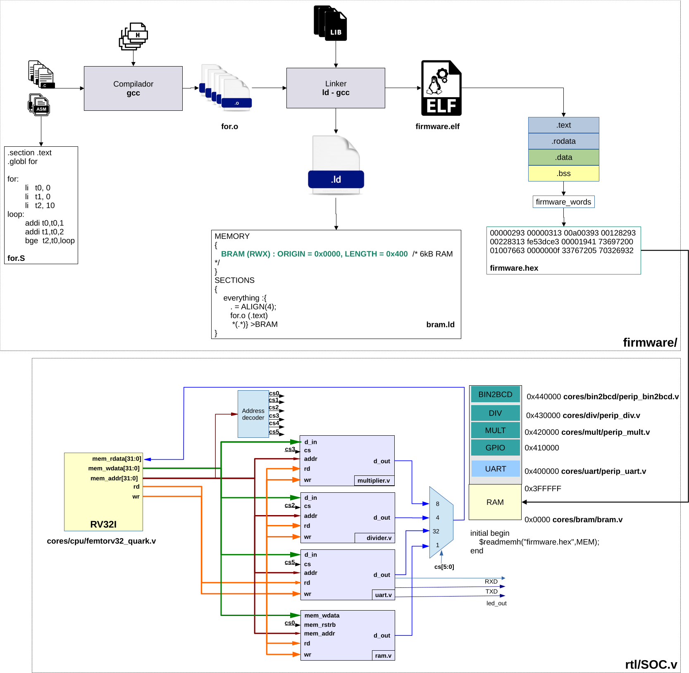
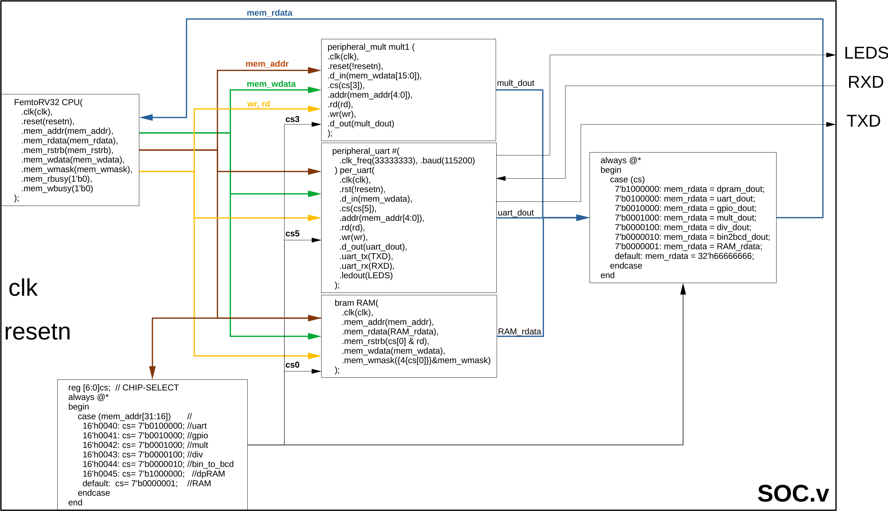
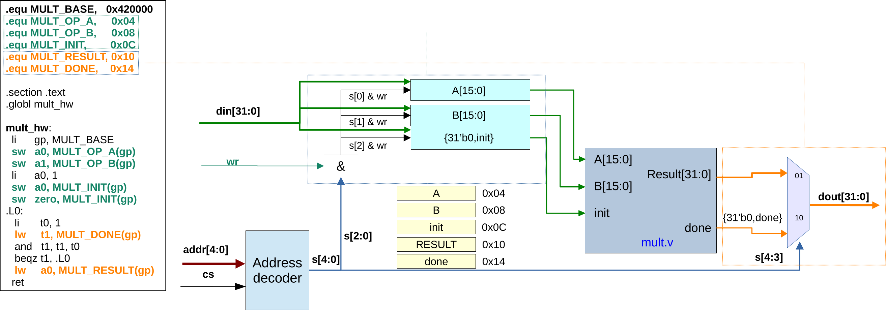

Cómo agregar a libfemtorv una función para manejar un periférico
Este documento describe el procedimiento completo para exponer un periférico del SoC femtoRV32 mediante una función C de libfemtorv.a.
El trabajo tiene cuatro partes:
- entender la interfaz MMIO del periférico en RTL;
- implementar el controlador en
libfemtorv/; - publicar la función en el encabezado de la librería;
- compilar y comprobar la función con un programa de prueba.
El ejemplo existente libfemtorv/hwmath.c puede usarse como referencia para los periféricos multiplicador, divisor y raíz cuadrada.
La Figura 1 presenta la arquitectura completa: en la parte superior aparece el flujo de compilación del software, desde los archivos fuente y la librería hasta firmware.hex; en la parte inferior aparece la conexión del procesador RV32I con la BRAM y los periféricos del SoC.

Figura 1. Arquitectura del procesador y flujo de generación del firmware.
1. Arquitectura de acceso a periféricos
El procesador se comunica con los periféricos mediante entrada/salida mapeada en memoria (MMIO, Memory-Mapped I/O). Para el programa C, un registro del periférico parece una dirección de memoria. Una escritura o lectura sobre esa dirección produce una transacción en el bus del SoC.
Por ejemplo, los periféricos matemáticos actuales usan estas direcciones base:
| Periférico | Dirección base |
|---|---:|
| Raíz cuadrada | 0x00410000 |
| Multiplicador | 0x00420000 |
| Divisor | 0x00430000 |
En rtl/SOC.v, los bits mem_addr[31:16] seleccionan el periférico:
case (mem_addr[31:16])
16'h0041: cs = 9'b000010000; // sqrt
16'h0042: cs = 9'b000001000; // mult
16'h0043: cs = 9'b000000100; // div
// ...
endcase
Los bits bajos de la dirección llegan al periférico como dirección interna de registro:
.addr(mem_addr[4:0])
Por tanto, una dirección completa se forma así:
dirección del registro = dirección base del periférico + offset del registro
Ejemplo:
DIV_BASE = 0x00430000
DIV_RESULT = 0x00000010
Dirección de DIV_RESULT = 0x00430010
La Figura 2 muestra cómo se materializa esta arquitectura en SOC.v. El procesador genera mem_addr, mem_wdata, mem_rstrb y mem_wmask; el decodificador convierte la dirección en una señal cs; y el multiplexor devuelve por mem_rdata la salida del periférico seleccionado.

Figura 2. Instanciación del procesador, la memoria y los periféricos en SOC.v.
2. Verificar primero la interfaz RTL
No se debe escribir el controlador C suponiendo el mapa de registros. Antes de programarlo, revise el módulo RTL del periférico y anote:
- dirección base asignada en
rtl/SOC.v; - señal
csconectada al periférico; - offsets de todos los registros;
- tamaño de cada registro;
- registros de lectura y de escritura;
- secuencia necesaria para iniciar una operación;
- significado y polaridad de la señal
done,busyo equivalente; - momento en el que el resultado es válido;
- comportamiento durante reset;
- condiciones especiales, como división por cero o datos fuera de rango.
Una tabla de interfaz evita errores al implementar el controlador:
| Offset | Nombre | Acceso | Descripción |
|---:|---|---|---|
| 0x04 | OPERAND_A | Escritura | Primer operando |
| 0x08 | OPERAND_B | Escritura | Segundo operando |
| 0x0C | INIT | Escritura | Inicia la operación |
| 0x10 | RESULT | Lectura | Resultado |
| 0x14 | DONE | Lectura | Bit 0 indica fin de operación |
Esta tabla es solamente una plantilla. Los nombres, offsets y protocolos reales deben salir del RTL del periférico que se va a manejar.
La Figura 3 muestra el multiplicador como ejemplo concreto. Los offsets 0x04, 0x08 y 0x0C seleccionan los registros de escritura A, B e init; los offsets 0x10 y 0x14 seleccionan las salidas RESULT y done. El código de software de la izquierda usa exactamente ese mapa de registros.

Figura 3. Diagrama interno del periférico multiplicador y mapa de registros MMIO.
Comprobar la dirección base
La dirección base no puede repetirse. En este SoC se debe revisar el case (mem_addr[31:16]) de rtl/SOC.v y confirmar que:
- el valor de dirección está reservado para el periférico nuevo;
- el
chip selectactiva únicamente ese periférico; - la salida
d_outdel periférico está incluida en el multiplexor de lecturamem_rdata.
Si cualquiera de esos tres elementos falta, el controlador C no podrá comunicarse correctamente con el periférico.
3. Crear el archivo fuente del controlador
Dentro de libfemtorv/, cree un archivo .c con un nombre relacionado con el periférico. Por ejemplo:
libfemtorv/accelerator.c
Incluya el encabezado público de la plataforma:
#include <femtorv32.h>
Defina la dirección base y los offsets observados en RTL:
#define ACCEL_BASE 0x00480000u
#define ACCEL_A 0x04u
#define ACCEL_B 0x08u
#define ACCEL_INIT 0x0Cu
#define ACCEL_RESULT 0x10u
#define ACCEL_DONE 0x14u
El sufijo u indica que las constantes son enteros sin signo.
Usar volatile
Los registros MMIO deben accederse mediante un puntero volatile:
volatile uint32_t *accel = (volatile uint32_t *)ACCEL_BASE;
volatile informa al compilador que cada lectura y cada escritura tiene un efecto externo y no debe eliminarse ni combinarse como si fuera acceso a RAM normal.
Sin volatile, el compilador podría:
- eliminar una escritura que considere redundante;
- leer
DONEuna sola vez y convertir el ciclo de espera en un ciclo infinito; - cambiar el orden esperado de algunos accesos.
Convertir offsets a índices
accel es un puntero a palabras de 32 bits. Por eso, al usar la forma accel[indice], el índice debe expresarse en palabras y no en bytes:
accel[ACCEL_A / 4] = a;
Con ACCEL_A = 0x04, la expresión anterior accede a:
ACCEL_BASE + 1 palabra = ACCEL_BASE + 4 bytes
Olvidar la división entre cuatro es un error grave: accel[0x04] accedería a ACCEL_BASE + 0x10, no a ACCEL_BASE + 0x04.
4. Implementar la función pública
Suponga un periférico que recibe dos operandos de 16 bits, necesita un pulso 1 → 0 en INIT, entrega un resultado de 32 bits y coloca en uno el bit 0 de DONE al terminar.
La función puede escribirse así:
#include <femtorv32.h>
#define ACCEL_BASE 0x00480000u
#define ACCEL_A 0x04u
#define ACCEL_B 0x08u
#define ACCEL_INIT 0x0Cu
#define ACCEL_RESULT 0x10u
#define ACCEL_DONE 0x14u
uint32_t hw_accel(uint16_t a, uint16_t b)
{
volatile uint32_t *accel = (volatile uint32_t *)ACCEL_BASE;
accel[ACCEL_A / 4] = a;
accel[ACCEL_B / 4] = b;
/* Crear el pulso de inicio exigido por el RTL. */
accel[ACCEL_INIT / 4] = 1u;
accel[ACCEL_INIT / 4] = 0u;
/* Esperar hasta que el bit 0 indique fin de operación. */
while ((accel[ACCEL_DONE / 4] & 1u) == 0u)
;
return accel[ACCEL_RESULT / 4];
}
El orden de estas operaciones corresponde al protocolo del ejemplo:
- escribir los operandos;
- generar el pulso de inicio;
- esperar la terminación;
- leer el resultado.
No copie esta secuencia automáticamente para todos los periféricos. Si el RTL usa otro protocolo —por ejemplo, start auto-limpiable, una señal busy activa en uno, FIFO, interrupción o varios registros de resultado— la función debe respetar ese protocolo.
Máscara y conversión del resultado
Si solamente una parte de d_out contiene el resultado, aplique una máscara antes de retornar:
return (uint16_t)(accel[ACCEL_RESULT / 4] & 0xFFFFu);
La máscara debe corresponder al ancho real definido en RTL. No use 0xFFFF para un resultado de 20, 24 o 32 bits.
Evitar un bloqueo permanente
El ejemplo usa espera por sondeo (polling) sin tiempo límite. Es simple, pero si el periférico no activa DONE, el procesador queda bloqueado para siempre.
Para una función que deba detectar fallos puede usarse un límite de iteraciones y retornar un estado separado del resultado:
int hw_accel_timeout(uint16_t a, uint16_t b, uint32_t *result)
{
volatile uint32_t *accel = (volatile uint32_t *)ACCEL_BASE;
uint32_t timeout = 100000u;
if (result == 0)
return -1;
accel[ACCEL_A / 4] = a;
accel[ACCEL_B / 4] = b;
accel[ACCEL_INIT / 4] = 1u;
accel[ACCEL_INIT / 4] = 0u;
while ((accel[ACCEL_DONE / 4] & 1u) == 0u) {
if (--timeout == 0u)
return -2;
}
*result = accel[ACCEL_RESULT / 4];
return 0;
}
El valor de timeout debe calcularse a partir de la latencia máxima del periférico y de la frecuencia del procesador. No debe escogerse arbitrariamente para una versión final.
5. Publicar la función en el encabezado
Agregue el prototipo a:
libfemtorv/include/femtorv32.h
Ejemplo:
extern uint32_t hw_accel(uint16_t a, uint16_t b);
El prototipo y la implementación deben coincidir exactamente en:
- nombre de función;
- tipo de retorno;
- cantidad de parámetros;
- tipo y orden de los parámetros.
Como femtorv32.h ya incluye <stdint.h>, pueden usarse tipos de ancho fijo como uint8_t, uint16_t y uint32_t.
Por qué usar tipos de ancho fijo
Los registros hardware tienen anchos definidos. Un tipo como uint16_t expresa que el dato tiene exactamente 16 bits, mientras que el tamaño de tipos como int puede depender de la arquitectura o del compilador.
El tipo de la API debe representar el dato útil del periférico, aunque las transacciones MMIO del bus se hagan mediante palabras de 32 bits.
6. Agregar el módulo al archivo de la librería
Abra:
libfemtorv/Makefile
Agregue el nuevo objeto a la variable OBJECTS. Por ejemplo:
OBJECTS = microwait.o milliwait.o wait_cycles.o femtorv32.o uart.o \
cycles_32.o print.o printf.o hwmath.o accelerator.o
La regla genérica existente compilará automáticamente:
accelerator.c -> accelerator.o
Después, ar incorporará accelerator.o en libfemtorv.a.
Si se crea el archivo .c pero no se agrega su .o a OBJECTS, el código compilará de manera aislada solamente si se solicita explícitamente, pero la función no quedará dentro de la librería. Al enlazar el programa aparecerá un error similar a:
undefined reference to `hw_accel'
7. Crear un programa de prueba
Cree el archivo junto al Makefile principal:
test_accelerator.c
Ejemplo:
#include <femtorv32.h>
int main(void)
{
uint16_t a = 12u;
uint16_t b = 34u;
uint32_t result = hw_accel(a, b);
printf("hw_accel(%d, %d) = %d\n", a, b, result);
if (result != 408u) {
printf("ERROR: resultado esperado = 408\n");
return 1;
}
printf("PRUEBA CORRECTA\n");
return 0;
}
El valor esperado debe calcularse independientemente del periférico. No use como valor esperado otra llamada a la misma función que se está probando.
Una prueba adecuada debe incluir:
- un caso sencillo cuyo resultado pueda comprobarse manualmente;
- cero como entrada, si está permitido;
- valores mínimos y máximos;
- casos que produzcan acarreo o usen todos los bits del resultado;
- entradas inválidas y comportamiento de error, si existen;
- varias operaciones consecutivas para verificar que
DONEeINITse rearman correctamente.
8. Compilar la librería y el firmware
Desde firmware/c/, reconstruya primero la librería:
make -C libfemtorv clean all
Compruebe que el nuevo módulo quedó dentro de libfemtorv.a:
riscv64-unknown-elf-ar t libfemtorv/libfemtorv.a
La lista debe contener:
accelerator.o
También puede verificar que la función fue exportada:
riscv64-unknown-elf-nm libfemtorv/libfemtorv.a | grep hw_accel
Debe aparecer un símbolo global definido, normalmente marcado con T:
00000000 T hw_accel
Para hacer una reconstrucción limpia del programa de prueba:
make clean
cp libfemtorv/crt0_baremetal.o .
make TARGET=test_accelerator
La copia de crt0_baremetal.o es necesaria después de make clean, porque el linker.ld principal espera ese objeto en firmware/c/ y la regla clean lo elimina.
El proceso debe producir:
firmware.elf: programa enlazado;firmware.lst: encabezados y desensamblado;firmware.map: mapa del enlazador;firmware.hex: imagen para la BRAM;- una copia de
firmware.hexenrtl/.
9. Revisar el ejecutable antes de simular
Busque la función en el desensamblado:
grep -n -A25 -B5 '<hw_accel>' firmware.lst
Esta revisión permite comprobar que:
- la función quedó enlazada;
- el programa realmente la llama;
- las direcciones inmediatas corresponden a la dirección base esperada;
- existen cargas y escrituras MMIO;
- no se enlazó por error una versión vieja de la librería.
También puede revisar el mapa:
grep -n 'hw_accel\|accelerator.o' firmware.map
10. Simular y observar la interfaz
Después de generar firmware.hex, ejecute el banco de pruebas del SoC desde rtl/ según el flujo de simulación del proyecto.
La salida UART del programa confirma el resultado funcional, pero una depuración completa debe comprobar también las transacciones MMIO en el VCD:
- escritura del operando A en el offset correcto;
- escritura del operando B en el offset correcto;
- escritura de
1enINIT; - escritura de
0enINIT, si el protocolo exige un pulso explícito; - activación del
chip selectcorrecto; - transición de
DONEen la polaridad esperada; - lectura de
RESULTdespués deDONE; - valor de
mem_rdataretornado al procesador.
Si el programa se queda esperando, determine primero si ocurre una de estas condiciones:
DONEnunca se activa;- se está leyendo el offset equivocado;
- el
chip selectno corresponde a la dirección base; - el periférico no fue agregado al multiplexor de
mem_rdata; INITno recibió la secuencia exigida;- el reset del periférico permanece activo;
- el software está usando una librería antigua que no fue recompilada.
11. Errores frecuentes
Dirección base incorrecta
Síntoma: no ocurre ninguna operación o responde otro periférico.
Revisión: compare la constante *_BASE con el case (mem_addr[31:16]) de rtl/SOC.v.
Offsets intercambiados
Síntoma: DONE se interpreta como resultado, el resultado siempre parece 0 o la función termina en un momento incorrecto.
Revisión: confirme cada offset directamente en el case interno del módulo RTL.
Índice sin dividir entre cuatro
Síntoma: la función accede a otro registro.
Código incorrecto:
accel[ACCEL_A] = a;
Código correcto para un puntero uint32_t *:
accel[ACCEL_A / 4] = a;
Falta de volatile
Síntoma: el comportamiento cambia con la optimización o el ciclo de espera no vuelve a leer DONE.
Corrección: use un puntero volatile para todos los registros MMIO.
Protocolo de inicio incorrecto
Síntoma: el periférico nunca empieza, se inicia varias veces o solamente funciona una vez.
Revisión: determine en RTL si INIT necesita nivel, pulso explícito, flanco o escritura auto-limpiable.
El archivo no está en OBJECTS
Síntoma: undefined reference durante el enlace.
Corrección: agregue el .o correspondiente a libfemtorv/Makefile y reconstruya la librería.
Encabezado e implementación no coinciden
Síntoma: advertencias, argumentos interpretados incorrectamente o truncamiento del resultado.
Corrección: haga idénticos el prototipo de femtorv32.h y la definición del archivo .c.
Se está enlazando una librería anterior
Síntoma: el código fuente parece correcto, pero el desensamblado no contiene los cambios.
Corrección: ejecute make -C libfemtorv clean all antes de reconstruir el firmware y compruebe el símbolo con nm.
El periférico escribe más bits de los que acepta el RTL
Síntoma: los operandos aparecen truncados.
Revisión: compare el tipo de la API, el ancho de mem_wdata conectado en SOC.v y el ancho del registro dentro del periférico.
12. Lista de comprobación final
RTL
- [ ] La dirección base es única.
- [ ] El periférico recibe el
chip selectcorrecto. - [ ] Los offsets están documentados y alineados.
- [ ]
d_outestá conectado al multiplexor de lectura. - [ ] El protocolo de
INIT,DONEyRESULTestá verificado. - [ ] Los anchos de entrada y salida están verificados.
Librería
- [ ] Existe un archivo
.cespecífico y legible. - [ ] Los accesos MMIO usan
volatile. - [ ] Los offsets en bytes se convierten correctamente a índices de palabra.
- [ ] El prototipo público está en
libfemtorv/include/femtorv32.h. - [ ] El nuevo
.oestá incluido enOBJECTS. - [ ]
ar tmuestra el objeto dentro delibfemtorv.a. - [ ]
nmmuestra la función como símbolo definido.
Prueba
- [ ] Existe un programa
test_*.ccon resultados esperados independientes. - [ ] El firmware compila y enlaza sin referencias indefinidas.
- [ ]
firmware.lstcontiene la función nueva. - [ ] La simulación termina y reporta los resultados esperados.
- [ ] El VCD confirma dirección, datos, orden y protocolo de los accesos MMIO.
- [ ] Se probaron varias operaciones consecutivas y casos límite.
Cuando todos estos puntos se cumplen, la función ya forma parte de la API pública de libfemtorv y puede utilizarse desde cualquier firmware que incluya <femtorv32.h> y enlace con -lfemtorv.